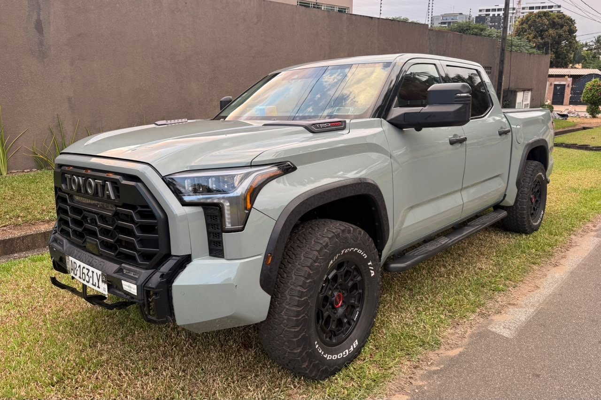

À vendre
Toyota Tundra TRD PRO 2022
2022 · V6 essence hybride · 4x4 · 25 000 km
46 000 000 FCFA
Prix à débattre
Année2022
MotorisationV6 essence hybride
Transmission4x4
CabineDouble cabine
IntérieurCuir rouge
ToitPanoramique
Kilométrage25 000 km
FinitionTRD PRO
ÉquipementFull options
Toyota Tundra TRD PRO 2022, motorisation V6 essence hybride et transmission 4x4. Double cabine, intérieur cuir rouge, toit panoramique et full options selon le vendeur. Véhicule haut de gamme alliant puissance et confort.
Contactez TVB CI AUTO pour les informations, la position du véhicule et une visite.